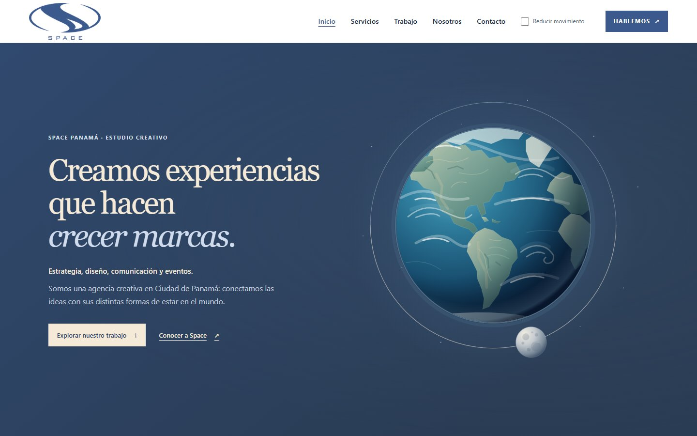
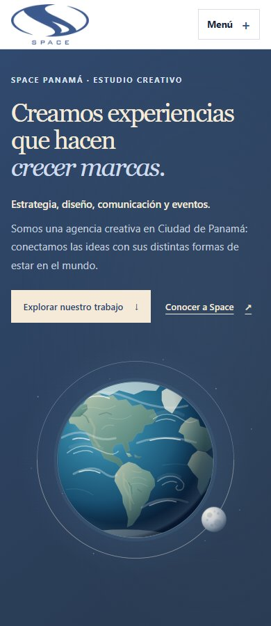
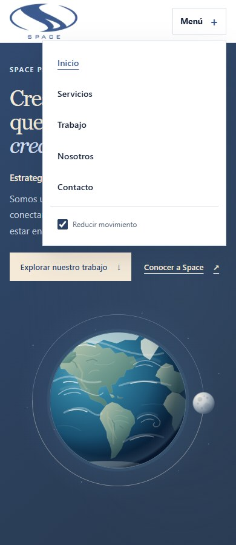
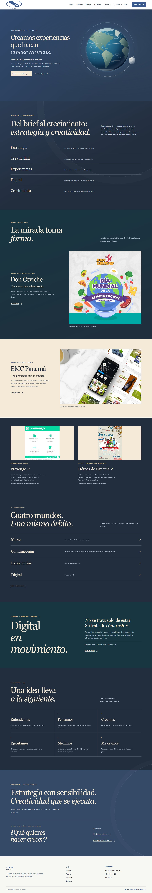
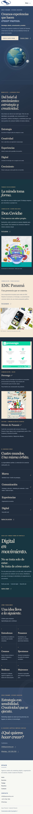

Space · movimiento y trabajo real
El Hero conserva su ilustración y composición, ahora sin controles ni barra junto a la Tierra. La preferencia general Reducir movimiento está en la navegación: visible en escritorio y dentro del menú en móvil. Recuerda la elección y respeta la preferencia del dispositivo.
Revisar la Home y probar la preferencia ↗ · Alcance, fuentes y verificaciones


Preferencia general, fuera del Hero

Más variedad con piezas verificables
Se incorporan dos piezas completas de carpetas autorizadas: comunicación de producto de Prevengo y el cartel histórico de Héroes de Panamá, donde Space figura como coorganizador. No se atribuyen desarrollo de software, resultados, premios o créditos no documentados. Don Ceviche, EMC y el caso de ambientación se conservan.
Ver la Home completa en escritorio y móvil

